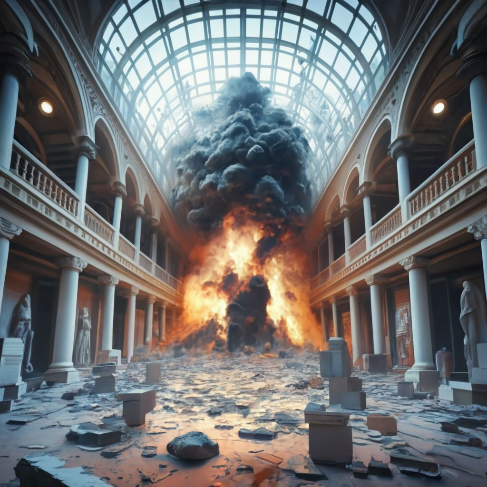

En la crítica decisión de asegurarse primero de que los rehenes sean evacuados de manera segura y de que el museo esté libre de otras trampas, Batman demuestra una vez más su inquebrantable compromiso con la seguridad y el bienestar de los ciudadanos de Gotham. Aunque esto significa que el Joker podría tener la oportunidad de escapar, Batman sabe que la vida de los inocentes es su prioridad máxima.
Mientras Batman se asegura de que cada rehén sea liberado de manera segura y revisa meticulosamente el museo en busca de trampas adicionales, el Joker aprovecha este momento para intentar su huida, riendo maníacamente ante la idea de haber burlado una vez más al Caballero Oscuro.
Sin embargo, en un giro inesperado y trágico, mientras Batman completa su revisión del museo, una de las trampas restantes del Joker, oculta de manera más astuta que las demás, se activa inesperadamente. Una serie de explosiones secuenciales sacude el museo, causando un caos adicional y poniendo en peligro la vida de todos los que aún se encuentran dentro.
En un acto final de heroísmo, Batman se abalanza para proteger a un grupo de rehenes y personal del museo, utilizando su propio cuerpo como escudo contra la explosión. La detonación es masiva, y el impacto se siente en todo el edificio, dejando un silencio sepulcral a su paso.
La noticia de la caída de Batman se esparce por la ciudad como un incendio forestal, dejando a la población de Gotham sumida en una mezcla de luto, gratitud y temor por el futuro sin su guardián oscuro. El legado de Batman, sin embargo, permanece indeleble en los corazones de aquellos que salvó y en el espíritu de Gotham, inspirando a una nueva generación a levantarse contra la oscuridad.
|
 |